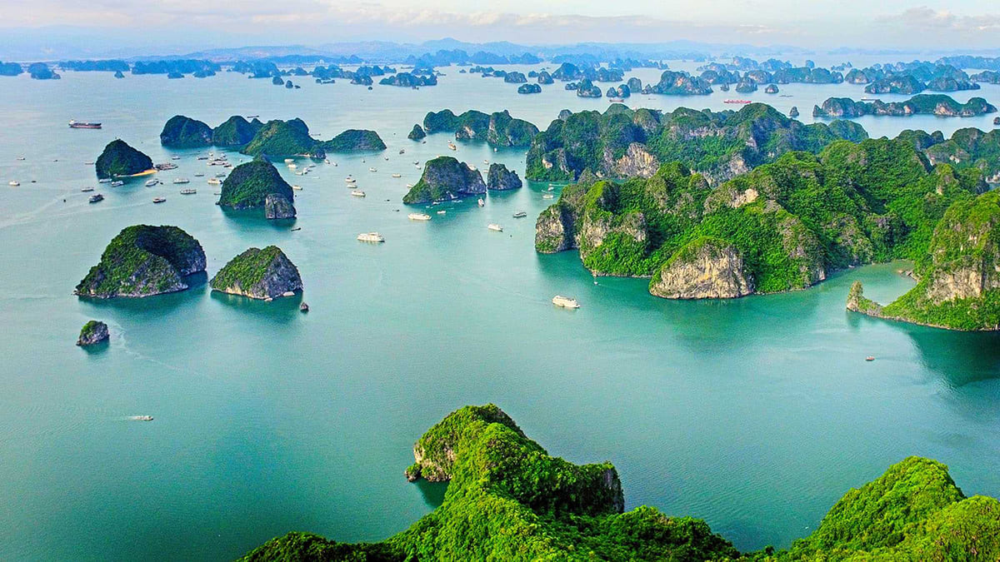

Vịnh Hạ Long
Vịnh Hạ Long được Unesco nhiều lần công nhận là Di sản thiên nhiên của Thế giới với hàng nghìn hòn đảo được làm nên bởi tạo hoá kỳ vĩ và sống động. Vịnh Hạ Long có phong cảnh tuyệt đẹp nên nơi đây là một điểm du lịch rất hấp dẫn với du khách trong nước và quốc tế.
Vịnh Hạ Long là một di sản độc đáo bởi địa danh này chứa đựng những dấu tích quan trọng trong quá trình hình thành và phát triển lịch sử trái đất, là cái nôi cư trú của người Việt cổ, đồng thời là tác phẩm nghệ thuật tạo hình vĩ đại của thiên nhiên với sự hiện diện của hàng nghìn đảo đá muôn hình vạn trạng, với nhiều hang động kỳ thú quần tụ thành một thế giới vừa sinh động vừa huyền bí. Bên cạnh đó, vịnh Hạ Long còn là nơi tập trung đa dạng sinh học cao với những hệ sinh thái điển hình cùng với hàng nghìn loài động thực vật vô cùng phong phú, đa dạng. Nơi đây còn gắn liền với những giá trị văn hóa – lịch sử hào hùng của dân tộc.

Một góc nhìn Vịnh Hạ Long từ đảo Titop. Nguồn ảnh: @halongtravel.vn
Vịnh Hạ Long nổi bật với hệ thống đảo đá và hang động tuyệt đẹp. Đảo ở Hạ Long có hai dạng là đảo đá vôi và đảo phiến thạch, tập trung ở hai vùng chính là vùng phía đông nam vịnh Bái Tử Long và vùng phía tây nam vịnh Hạ Long. Đây là hình ảnh cổ xưa nhất của địa hình có tuổi kiến tạo địa chất từ 250 – 280 triệu năm, là kết quả của quá trình vận động nâng lên, hạ xuống nhiều lần từ lục địa thành trũng biển. Quá trình Carxto bào mòn, phong hoá gần như hoàn toàn tạo ra một Hạ Long độc nhất vô nhị trên thế giới.
Hàng trăm đảo đá, mỗi đảo mang một hình dáng khác nhau hết sức sinh động: hòn Đầu Người, hòn Rồng, hòn Lã Vọng, hòn Cánh Buồm, hòn Gà Chọi, hòn Lư Hương… Tiềm ẩn trong lòng các đảo đá ấy là những hang động tuyệt đẹp gắn với nhiều truyền thuyết thần kỳ như động Thiên Cung, hang Đầu Gỗ, hang Sửng Sốt, hang Trinh Nữ, động Tam Cung… Đó thực sự là những lâu đài của tạo hoá giữa chốn trần gian. Từ xưa, Hạ Long đã được đại thi hào dân tộc Nguyễn Trãi mệnh danh là “kỳ quan đất dựng giữa trời cao”.


Vịnh Hạ Long còn có hệ thống những hang động đẹp lung linh như hang Sửng Sốt, hang Thiên Cung, hang Trinh Nữ…vv. Nguồn ảnh: Internet
Dẫu bạn ở đâu trên thế gian này, là người da trắng hay da màu, không kể quốc tịch, ngôn ngữ, tuổi tác… khi đặt chân đến đây cũng đều có chung những cảm xúc, sự rung động của con tim trước một kỳ quan của đá và nước, và khi phải chia tay Hạ Long chắc sẽ để lại những ấn tượng khó quên… Câu chuyện huyền thoại xa xưa về đàn rồng mẹ và đàn rồng con đã phun châu nhả ngọc tạo nên hàng ngàn đảo đá ngăn bước quân thù, hôm nay vẫn đứng đó tạo nên một di sản vô giá cho nhân loại.
Ngày nay có nhiều loại hình tour du lịch để bạn có thể khám phá vịnh Hạ Long, phổ biến nhất là các tour du lịch Hạ Long thăm quan 1 đến 2 ngày, hành trình thường kéo dài 4 đến 6 tiếng thăm vịnh sau đó quay lại bờ ngủ đêm trên khách sạn. Tuy nhiên xu hướng mới hiện nay là loại hình du thuyền Hạ Long, hay còn gọi là tour ngủ đêm trên vịnh. Du khách sẽ vô cùng thích thú với các trải nghiệm thú vị trên vịnh như chèo thuyền kayak, thăm hang động, tắm biển trên vịnh, ngắm bình minh hoàng hôn giữa vịnh biển bao la…và cùng nghỉ dưỡng trải nghiệm các dịch vụ cao cấp trên tàu Hạ Long. Ngoài ra sau một chuyến thăm quan trên vịnh thường kết thúc vào khoảng 2-3h chiều, nếu bạn muốn ngắm nhìn toàn cảnh vịnh Hạ Long từ trên cao bạn có thể lựa chọn dịch vụ bay cùng thủy phi cơ ngắm toàn cảnh vịnh Hạ Long cùng hãng hàng không Hải Âu Aviation, thời gian bay thường từ 25-30 phút. Vậy bạn còn chần chờ gì nữa hãy chọn cho mình một loại hình thích hợp để cùng người thân và bạn bè khám phá vịnh Hạ Long theo cách riêng của mình.